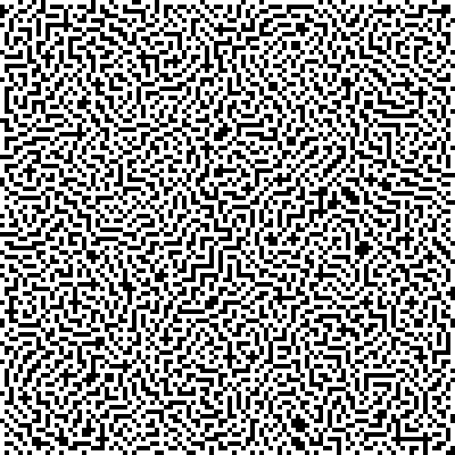
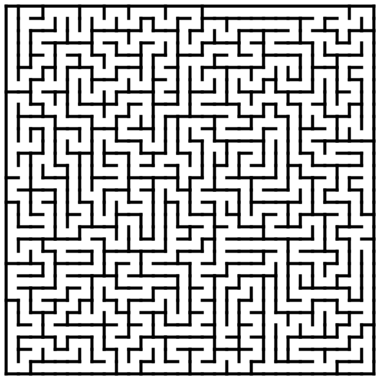

生成迷宫图
http://code.activestate.com/recipes/578356-random-maze-generator/
https://en.wikipedia.org/wiki/Maze_generation_algorithm
想实现A*算法和BFS比较验证正确性，所以想构造数据来跑测试，迷宫图是比较好的例子。 Wikipedia上给出了很多种生成迷宫图的算法。
下面是一份生成迷宫图的代码，大致思路是使用DFS进行探路，所有检查过的地方都标记”可以访问“。 这份代码只能指定初始点，没有办法指定结束点，结束点可以在所有到达过的”可以访问“点上任意选择。 因为每次只需要扩展一个节点，所以使用显式的栈也非常简单。
为了不产生回路这样的情况，在扩展下一个节点的时候，会看这个节点是否只有1个可以访问的节点。 代码最后还利用PIL生成了图像，我觉得为了好看，应该白色的地方是”可以访问节点“，而黑色地方是障碍物。
# Random Maze Generator using Depth-first Search # http://en.wikipedia.org/wiki/Maze_generation_algorithm # FB - 20121214 import random from PIL import Image imgx = 500; imgy = 500 image = Image.new("RGB", (imgx, imgy)) pixels = image.load() mx = 100; my = 100 # width and height of the maze maze = [[0 for x in range(mx)] for y in range(my)] dx = [0, 1, 0, -1]; dy = [-1, 0, 1, 0] # 4 directions to move in the maze color = [(0,0, 0), (255, 255, 255)] # RGB colors of the maze # start the maze from a random cell # stack = [(random.randint(0, mx - 1), random.randint(0, my - 1))] stack = [(0, 0)] while len(stack) > 0: (cx, cy) = stack[-1] maze[cy][cx] = 1 # find a new cell to add nlst = [] # list of available neighbors for i in range(4): nx = cx + dx[i]; ny = cy + dy[i] if nx >= 0 and nx < mx and ny >= 0 and ny < my: if maze[ny][nx] == 0: # of occupied neighbors must be 1 ctr = 0 for j in range(4): ex = nx + dx[j]; ey = ny + dy[j] if ex >= 0 and ex < mx and ey >= 0 and ey < my: if maze[ey][ex] == 1: ctr += 1 if ctr == 1: nlst.append(i) # if 1 or more neighbors available then randomly select one and move if len(nlst) > 0: ir = nlst[random.randint(0, len(nlst) - 1)] cx += dx[ir]; cy += dy[ir] stack.append((cx, cy)) else: stack.pop() # 翻转颜色，白色是可以访问节点，黑色是不可以访问节点。 for x in maze: x = [(1-v) for v in x] # paint the maze for ky in range(imgy): for kx in range(imgx): pixels[kx, ky] = color[maze[my * ky // imgy][mx * kx // imgx]] image.save("Maze_" + str(mx) + "x" + str(my) + ".png", "PNG")

UPDATE@202301 上面打印出来的图片有点不太友好，我重新找了另外一个版本 https://scipython.com/blog/making-a-maze/ 可以打印出SVG, 但是好像输出难度不是特别高
# make_maze.py import random # Create a maze using the depth-first algorithm described at # https://scipython.com/blog/making-a-maze/ # Christian Hill, April 2017. class Cell: """A cell in the maze. A maze "Cell" is a point in the grid which may be surrounded by walls to the north, east, south or west. """ # A wall separates a pair of cells in the N-S or W-E directions. wall_pairs = {'N': 'S', 'S': 'N', 'E': 'W', 'W': 'E'} def __init__(self, x, y): """Initialize the cell at (x,y). At first it is surrounded by walls.""" self.x, self.y = x, y self.walls = {'N': True, 'S': True, 'E': True, 'W': True} def has_all_walls(self): """Does this cell still have all its walls?""" return all(self.walls.values()) def knock_down_wall(self, other, wall): """Knock down the wall between cells self and other.""" self.walls[wall] = False other.walls[Cell.wall_pairs[wall]] = False class Maze: """A Maze, represented as a grid of cells.""" def __init__(self, nx, ny, ix=0, iy=0): """Initialize the maze grid. The maze consists of nx x ny cells and will be constructed starting at the cell indexed at (ix, iy). """ self.nx, self.ny = nx, ny self.ix, self.iy = ix, iy self.maze_map = [[Cell(x, y) for y in range(ny)] for x in range(nx)] def cell_at(self, x, y): """Return the Cell object at (x,y).""" return self.maze_map[x][y] def __str__(self): """Return a (crude) string representation of the maze.""" maze_rows = ['-' * self.nx * 2] for y in range(self.ny): maze_row = ['|'] for x in range(self.nx): if self.maze_map[x][y].walls['E']: maze_row.append(' |') else: maze_row.append(' ') maze_rows.append(''.join(maze_row)) maze_row = ['|'] for x in range(self.nx): if self.maze_map[x][y].walls['S']: maze_row.append('-+') else: maze_row.append(' +') maze_rows.append(''.join(maze_row)) return '\n'.join(maze_rows) def write_svg(self, filename, height=500): """Write an SVG image of the maze to filename.""" aspect_ratio = self.nx / self.ny # Pad the maze all around by this amount. padding = 10 # Height and width of the maze image (excluding padding), in pixels width = int(height * aspect_ratio) # Scaling factors mapping maze coordinates to image coordinates scy, scx = height / self.ny, width / self.nx def write_wall(ww_f, ww_x1, ww_y1, ww_x2, ww_y2): """Write a single wall to the SVG image file handle f.""" print('<line x1="{}" y1="{}" x2="{}" y2="{}"/>' .format(ww_x1, ww_y1, ww_x2, ww_y2), file=ww_f) # Write the SVG image file for maze with open(filename, 'w') as f: # SVG preamble and styles. print('<?xml version="1.0" encoding="utf-8"?>', file=f) print('<svg xmlns="http://www.w3.org/2000/svg"', file=f) print(' xmlns:xlink="http://www.w3.org/1999/xlink"', file=f) print(' width="{:d}" height="{:d}" viewBox="{} {} {} {}">' .format(width + 2 * padding, height + 2 * padding, -padding, -padding, width + 2 * padding, height + 2 * padding), file=f) print('<defs>\n<style type="text/css"><![CDATA[', file=f) print('line {', file=f) print(' stroke: #000000;\n stroke-linecap: square;', file=f) print(' stroke-width: 5;\n}', file=f) print(']]></style>\n</defs>', file=f) # Draw the "South" and "East" walls of each cell, if present (these # are the "North" and "West" walls of a neighbouring cell in # general, of course). for x in range(self.nx): for y in range(self.ny): if self.cell_at(x, y).walls['S']: x1, y1, x2, y2 = x * scx, (y + 1) * scy, (x + 1) * scx, (y + 1) * scy write_wall(f, x1, y1, x2, y2) if self.cell_at(x, y).walls['E']: x1, y1, x2, y2 = (x + 1) * scx, y * scy, (x + 1) * scx, (y + 1) * scy write_wall(f, x1, y1, x2, y2) # Draw the North and West maze border, which won't have been drawn # by the procedure above. print('<line x1="0" y1="0" x2="{}" y2="0"/>'.format(width), file=f) print('<line x1="0" y1="0" x2="0" y2="{}"/>'.format(height), file=f) print('</svg>', file=f) def find_valid_neighbours(self, cell): """Return a list of unvisited neighbours to cell.""" delta = [('W', (-1, 0)), ('E', (1, 0)), ('S', (0, 1)), ('N', (0, -1))] neighbours = [] for direction, (dx, dy) in delta: x2, y2 = cell.x + dx, cell.y + dy if (0 <= x2 < self.nx) and (0 <= y2 < self.ny): neighbour = self.cell_at(x2, y2) if neighbour.has_all_walls(): neighbours.append((direction, neighbour)) return neighbours def make_maze(self): # Total number of cells. n = self.nx * self.ny cell_stack = [] current_cell = self.cell_at(self.ix, self.iy) # Total number of visited cells during maze construction. nv = 1 while nv < n: neighbours = self.find_valid_neighbours(current_cell) if not neighbours: # We've reached a dead end: backtrack. current_cell = cell_stack.pop() continue # Choose a random neighbouring cell and move to it. direction, next_cell = random.choice(neighbours) current_cell.knock_down_wall(next_cell, direction) cell_stack.append(current_cell) current_cell = next_cell nv += 1 def make_maze(output, nx, ny, ix, iy, height): maze = Maze(nx, ny, ix, iy) maze.make_maze() maze.write_svg(output, height=height) # Maze dimensions (ncols, nrows) nx, ny = 30, 30 # Maze entry position ix, iy = 0, 0 height = 600 make_maze('maze.svg', nx, ny, ix, iy, height)
